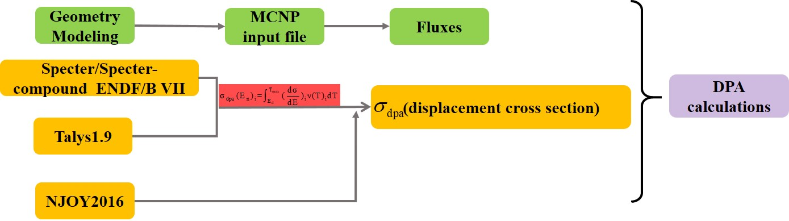
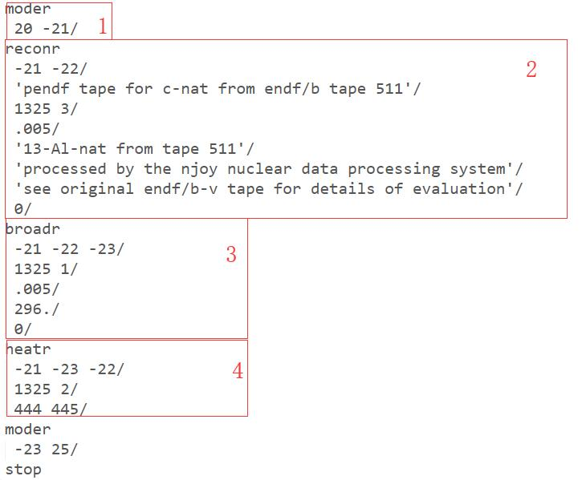

4. Neutron Damage¶
My another research work is the neutron radiation damage in materials and mainly focus on the displacement cross section and displacement per atom(dpa) calculations.Quantification of displacement damage is an essential parameter to assess the strength and lifetime of functional materials in the ITER and upcoming fusion devices such as European Demo fusion reactor.Fusion neutrons produce different species of primary knocked on atoms(PKA) based on the different reaction channels such as (n,n’),(n,2n),(n, \(\alpha\) ), (n,p) and (n, \(\gamma\) )etc.Damage cascading of PKA and other knocked on atoms produce vacancies and interstitials,both collectively known as Frenkel pair.Displacement of atoms has adverse effects on the liftime of reactor materials and quantized with displacement per atom(dpa).Prediction of dpa values is required to accurately predict the liftime of functional materialsto be placed in fusion reactor. And my research route shows the following picture:
In order to calculate the dpa,you should calculate the two physical quantity neutron fluxes and displacement cross section where their formulas is:
where \((\frac{d\sigma}{dE})_i\) is the energy spectra of PKA or recoil atom from \(i^{th}\) reaction channel, \(\nu(T)_i\) is the number of produced Frenkel pair from the dynamics of PKA atom of T energy, \(E_n\) is the energy of incident neutron, \(E_d\) is the displacement threshold energy of target lattice, \(T_{max}\) is the maximum energy available for displacement damage and \(\Phi_n\) is the neutron flux on the material.
4.1. Basic Models and Methods¶
4.2. SPECTRA and SPECOMP_Distribution¶
SPECTER is a neutron damage calculations for materials irradiations programm.
SPECTER input is as follows(all free format):
Title （80 characters)
ITYP,ISIG,IGP,IPKA,ACNM,TIME(Free Format)
ITYP = 0 If no flux uncertainties,= 2 Otherwise
ISIG = 1 To print collapsed cross sections, =0 To stop,
= 2 For 1-group Thermal Neutron(2200 m/s)
IGP = 0 If group differential flux(n/cm2-MeV, = OUTPUT)
= 1 If true differential flux
4.3. Talys1.9¶
4.4. NJOY Nuclear Data Processing¶
The NJOY nuclear data processing system is a comprehensive computer code package for producing pointwise and multigroup nuclear cross sections and related quantities from evaluated nuclear data in the ENDF format.The U.S. Evaluated Nuclear Data Files(ENDF) have progressed through a number of versions,notably ENDF/B-III,ENDF/B-IV,ENDF/B-V,ENDF/B-VI,ENDF/B-VII.The ENDF format has also evolved through many versions.Variations of the format called “ENDF-6” were used for ENDF/B-VI and ENDF/B-VII,and will be used in ENDF/B-VIII.The ENDF format is also used in other nuclear data libraries such as the JEFF libraries in Europe and the JENDL libraries in Iapan,or in specialized libraries distributed through the Nuclear Data Section of International Atomic Energy Agency(IAEA0.These libraries represent the underlying nuclear data from a physics viewpoint,but practical calculations usually require special libraries for particle transport codes or reactor core physics codes.This is the mission of NJOY-to take the basic data from the nuclear data library and convert it into the forms needed for applications.The NJOY code consists of a set of main modules,each performing a well-defined processing task.Each of these main modules is essentially a separate computer program.They are linked to one another by input and output files.And in this simple tutorial,I will introduce some main modules which is important to radiation damage calculations.Okay,let’s start our tour.
Before our learns,you should read the examples test 1 seriously and I will regard it as a main case to our learning. And what I write here is to let you are familar with NJOY as soon as possible,in contrast to this,the theory or complete tutorials need you to read.However I believe that what this tutorial will make you love it and do your research better.
4.4.1. MODER¶
MODER converts ENDF “tapes” back and forth between formatted(that is,ASCII) and blocked binary modes.
#---input specifications(free) format)--------------------
**card 1** unit numbers
nin input unit
nout output unit
a positive unit is coded (mode 3)
a negative unit is blocked binary(njoy mode)
#note:abs(min) ge 1 and le 19 is a flag to select various materials fro one or more
#input tapes,with or without mode conversion,the kind of data to be processed is
#keyed to min as follows:
nin = 1,for endf or pendf input and output
2,for gendf input and output
3, for errorr-format input and output
cards 2 and 3 for abs(min) ge 1 and le 19 only
**card** 2
tpid tapeid for nout,66 characters allowed
(delimited with ',ended with /)
**card** 3
nin input unit
terminate moder by setting nin=0
matd material on this tape to add to nout
4.4.2. RECONR¶
RECONR reconstructs pointwise(energy-dependent) cross sections from ENDF resonance parameters and interpolation schemes.
#---input specifications (free format)-------------
**card** 1
nendf unit for endf tape
npend unit for pendf tape
**card** 2
tlabel 66 character label for new pendf tape
delimited with quotes,ended with /.
**card** 3
mat material to be reconstructed
ncards number of cards of descriptive data for new mf1(default=0)
ngrid number of user energy grid points to be added.(default=0)
**card** 4
err fractional reconstruction tolerance used when resonance-integral
error criterion(see errint) is not satisfied.
tempr reconstruction temperature(deg kelvin)(default=0)
errmax fractional reconstruction tolerance used when resonance-integral
error criterion is satisfied(errmax.ge.err,default=10*err)
errint maximum resonance-integral error(in barns) per grid point (default=err/20000)
**card** 5
cards ncards of descriptive comments for mt451 each card
delimited with quotes,ended with /.
**card** 6
enode users energy grid points
cards 3,4,5,6 must be input for each material desired
mat=0/ terminates execution of reconr
4.4.3. BROADR¶
BROADR Doppler-broadens and thins pointwise cross sections.
#---input specification(free format)--------
**card** 1
nendf input endf tape(for thermal nubar only)
nin input pendf tape
nout output pendf tape
**card** 2
mat1 material to broadened and thinned
ntemp2 number of final temperature(default=1)
istart restart(0 no,1 yes,default 0)
istrap bootstrap(0 no,1 yes,default 0)
temp1 starting temperature from nin(default=OK)
**card** 3
errthn fractional tolerance for thinning
thnmax max. energy for broadening and thinning(default=1 MeV)
errmax fractional tolerance used when integral criterion is satisfied
(same usage as in reconr)
(errmax.ge.errthn, default=10*errthn)
errint parameter to control integral thinning(usage as in reconr)
(default=errthn/20000) set very small to turn off integral thinning
#(A good choice for the convergence parameters errthn,errmax,and errint is
# the same set of values used in reconr)
**card** 4
temp2 final temperatures (deg Kelvin)
**card** 5
mat1 next MAT number to be processed with these parameters.Terminate with mat1=0.
4.4.4. HEATR¶
HEATER generative pointwise heat production cross section (neutron KERMA factors) and radiation damage production cross sections.
#---input specifications(free format)------------------
**card** 1
nendf unit for endf tape
nin unit for input pendf tape
nout unit for output pendf tape
nplot unit for graphical check output
**card** 2
matd material to be processed
npk number of partial kermax desired(default=0)
nqa number of user q values(default=0)
ntemp number of temperatures to process(default=0,meaning all on pendf)
local 0/1=gamma rays transported/deposited locally(default=0)
iprint print(0 min, 1 max, 2 deck)(default=0)
ed displacement energy for damage(default from built-in table)
**card** 3 for npk gt 0 only
mtk mt numbers for partial kermas desired total (mt301) will be provided
automatically.partical kerma for reaction mt is mt+300 and may not be
properly defined unless a gamma file for mt is on endf tape.
special values allowed--
303 non-elastic (all but mt2)
304 inelastic (mt51 thru 91)
318 fission(mt18 or mt19,20,21,38)
401 disappearance(mt102 thru 120)
442 total ev-barns
443 total kinematic kerma(high limit)
damage energy production values--
444 total
445 elastic(mt2)
446 inelastic (mt51 thru 91)
447 disappearance (mt102 thru 120)
cards and 5 for nqa gt 0 only
**card** 4
mta mt number for users q values
**card** 5
qa user specified q values (ev)
(if qa.ge.99.e6,read in variable qbar for this reaction)
**card** 5a variable qbar (for reactions with qa flag only)
qbar tab1 record giving qbar versus e (1000 words max)
4.4.5. GROUPR¶
GROUPR generates self-shielded multigroup cross sections,group-to-group scattering matrices,photon production matrices,and charged-particle multi-group cross sections from pointwise input.
#---input specifications(free format)-----------
**card** 1
nendf unit for endf tape
npend unit for pendf tape
ngout1 unit for input gout
4.4.6. ACER¶
ACER prepares libraries in ACE format for the Los Alamos continuous-energy Monte Carlo MCNP and MCNPX codes.The ACER module is supported by subsidiary modules for the different classes of the ACE format.
4.4.7. PLOTR and VIEWR¶
PLOTR makes plots of cross sections and perspective plots of distributions for both pointwise and multigroup data by generating input for the VIEWR module and VIEWR converts plotting files produced by the other modules into high-quality color Postscript plots.